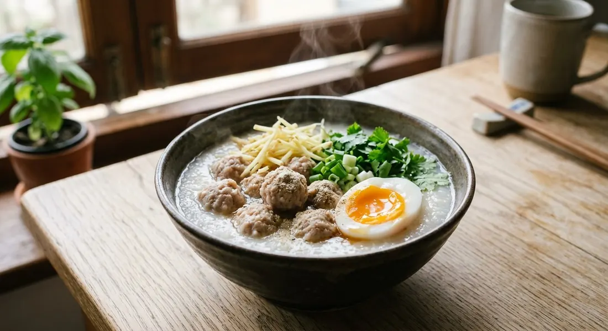

Silky broken-rice porridge with bouncy pork balls, a rain of ginger and spring onion, and a soft egg — Thailand's 5 a.m. breakfast.

โจ๊ก is Thailand's morning congee — the first steam on the street at five a.m., and the bowl you order when you want breakfast that sits gently. It's rice cooked far past soup into silk, but Thai jok is never plain: the standard toppings are bouncy pork balls, julienned ginger, spring onion, coriander and a soft-boiled egg, with white pepper and a shake of soy at the table.
The rice is the quiet skill. Wongnai's restaurant-style version grinds jasmine and sticky rice half and half — the sticky grain gives the porridge its body and gloss — then boils it with ginger slices and coriander roots for the base fragrance. Kapook's home shortcut gets there differently: boil the grains until they burst, take the pot off the heat and let them soak for 15–20 minutes so they swell, then reheat — proper porridge texture without the long stir. Cookpad goes the full lazy route: the rice cooker, three times the liquid, stirring every twenty minutes.
The pork balls matter as much as the rice. Wongnai's หมูเด้ง — the bouncy kind — is minced pork kneaded with tapioca starch, egg white and, the key, half a teaspoon of baking soda, pounded in a mortar until elastic and rested overnight. Pim's loaded version adds what she calls non-negotiable: intestine and thin-sliced liver, blanched just until set, plus the option of a century egg. That's the ทรงเครื่อง — fully loaded — bowl.
| Thai | English | Amount |
|---|---|---|
| โจ๊ก (the porridge) | ||
| ข้าวหอมมะลิบด | Jasmine rice, ground | 1 cup |
| ข้าวเหนียวบด | Sticky rice, ground | ½ cup |
| ขิงหั่นแว่น / รากผักชี | Ginger slices / coriander roots | 3 / 2 |
| ซอสข้นปรุงรส / ซีอิ๊วขาว | Seasoning sauce / white soy | 1 tbsp / 1 tbsp |
| เห็ดหอมแห้ง | Dried shiitake | 2 |
| หมูเด้ง (the bouncy pork balls) | ||
| หมูสับ | Minced pork | 200 g |
| แป้งมัน / เบคกิ้งโซดา | Tapioca starch / baking soda | ½ tsp / ½ tsp |
| น้ำมันงา / น้ำตาล / น้ำมันหอย | Sesame oil / sugar / oyster sauce | 1 tsp / 1 tsp / ½ tbsp |
| ไข่ขาว / รากผักชี / เกลือ | Egg white / coriander root / salt | ½ / 1 / a little |
| To serve | ||
| ขิงซอย / ต้นหอม / ผักชี | Julienned ginger / spring onion / coriander | to taste |
| ไข่ลวก | Soft-boiled egg | 1 per bowl |
Pim's fully loaded version: Tai Hao jok rice in pork-bone stock, plus intestine, thin-sliced liver, shiitake and your choice of soft, salted or century egg. Kapook's shortcut: brown + sticky rice coarsely pounded, boil until the grains burst, soak 15–20 minutes off the heat, reheat.
The rice blend. Jasmine + sticky (Wongnai), brown + sticky (Kapook's healthy twist), the classic Tai Hao broken-jok sachets (Pim), or plain jasmine (Cookpad). Everyone blends or breaks the grain for silkiness — plain whole jasmine is the outlier and needs the most stirring.
The cooking route. Long simmer (Wongnai, Pim), boil-then-soak-then-reheat (Kapook's 15–20 minute shortcut), or the rice cooker on jok mode (Cookpad). The soak trick is the fastest path to real porridge texture.
The pork. Bouncy baking-soda balls (Wongnai's หมูเด้ง), plain seasoned balls (Cookpad), moo ba-chor (Pim), or loose mince stirred into the pot (Kapook). The bouncy ball is the restaurant standard — the baking soda is the secret, and every street stall knows it.
Offal or not. Pim's intestine and liver are her non-negotiables for the loaded bowl; the other sources serve the clean version with just pork balls. Century egg is her listed alternative to the soft egg.
Ginger in or on. Wongnai and Kapook simmer ginger slices in the porridge for aroma and julienne it for the top; Cookpad keeps all the ginger as a topping. Both schools agree the topping is mandatory — jok without ginger isn't jok.
This recipe is translated from the following Thai-language sources. Where they disagree, we've said so.
1. Wongnai — "สูตร โจ๊กหมู" by Charmmy Orn (the recipe used here: half-and-half rice, bouncy balls) — wongnai.com
2. Pim's Kitchen (พิม) — "โจ๊กหมูทรงเครื่อง" (the fully loaded version) — pim.in.th
3. Kapook — "โจ๊กหมูสับ สูตรประหยัดเวลา" (the soak-and-reheat shortcut) — cooking.kapook.com
4. Cookpad — "โจ๊กหมูสับไข่จากหม้อหุงข้าว" (the rice-cooker school) — cookpad.com